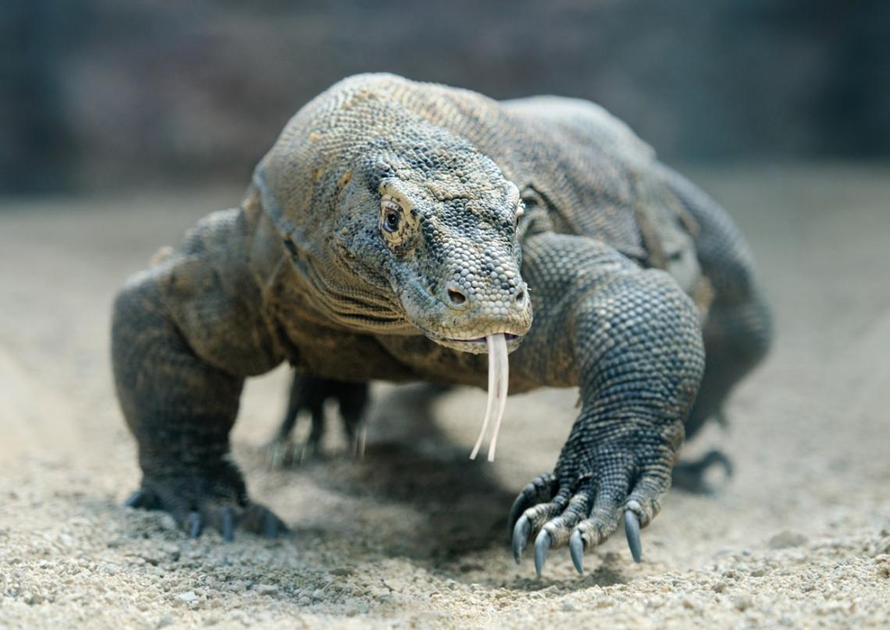
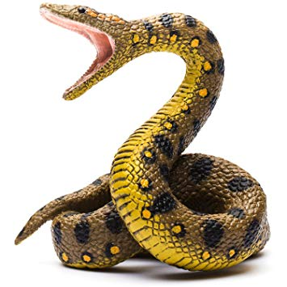
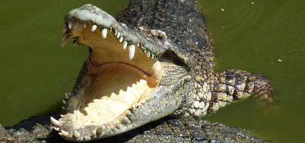

ANIMALES
| Reptiles | Mamiferos | Pájaros | Anfibios |
Reptiles
Los reptiles son animales vertebrados que se caracterizan por desplazarse reptando. Es decir, arrastrándose por el suelo, como la serpiente, el cocodrilo, el lagarto o la tortuga. Ello es debido a que originalmente vivían en medios acuáticos. La evolución los ha llevado a adaptarse totalmente a la vida terrestre. Aún así, habitualmente habitan en zonas con presencia de agua.
Generalmente, los reptiles tienen el cuerpo cubierto de una piel seca formada por escamas, respiran por pulmones y tienen la sangre fría. Es decir que su temperatura corporal varía en función de las condiciones climáticas. La mayoría son ovíparos: se reproducen mediante huevos que fecundan en el nido. En el mundo existen unas 8.000 especies de reptiles diferentes.
|  |  |  |
| Dragón de Komodo | Anaconda Común | Cocodrilo de Siam |